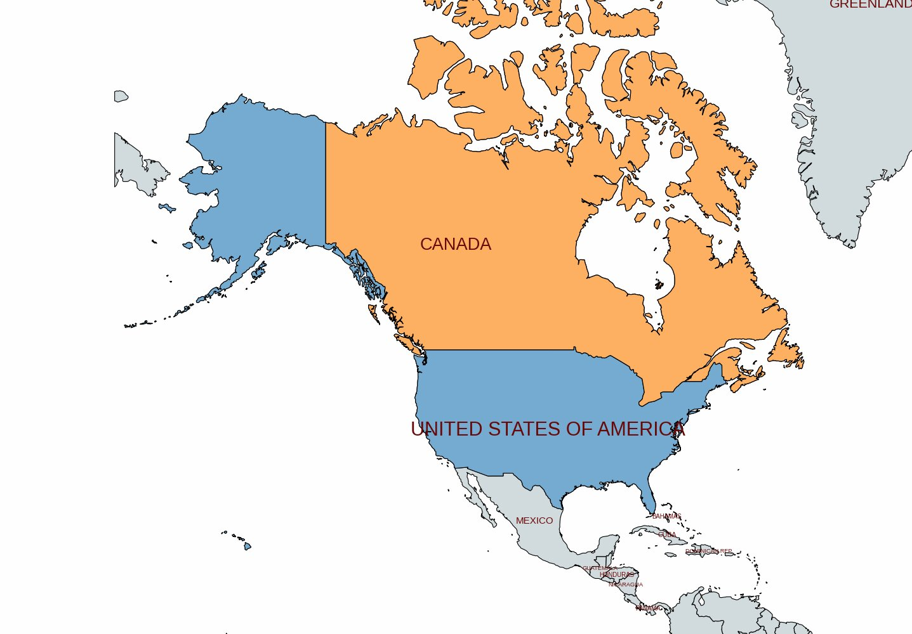
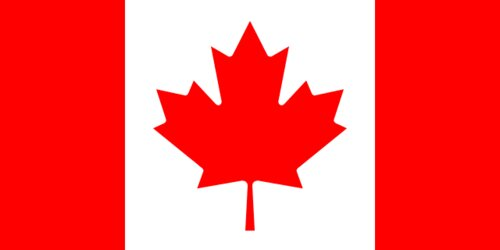
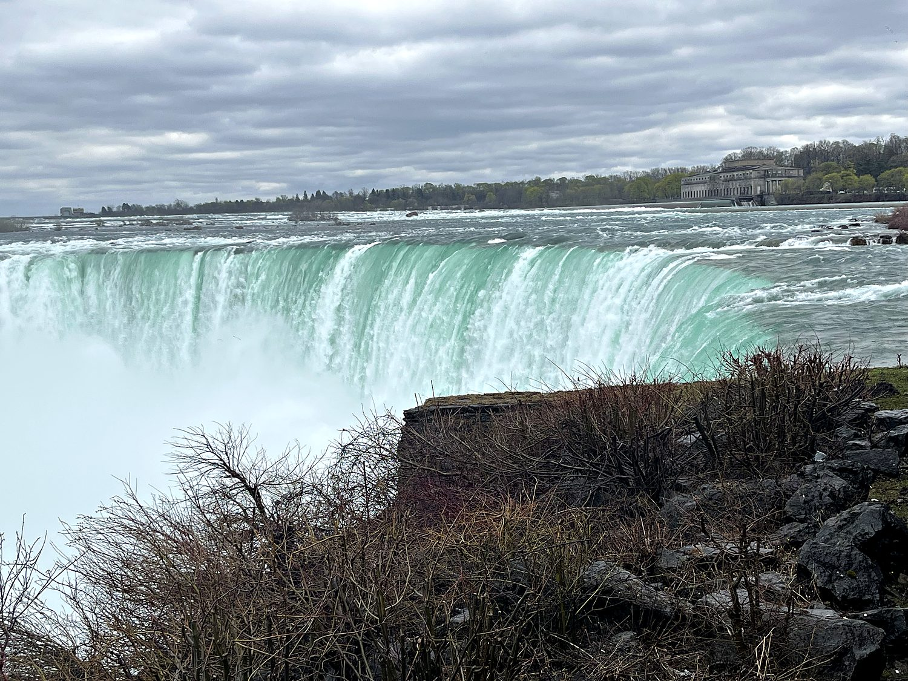
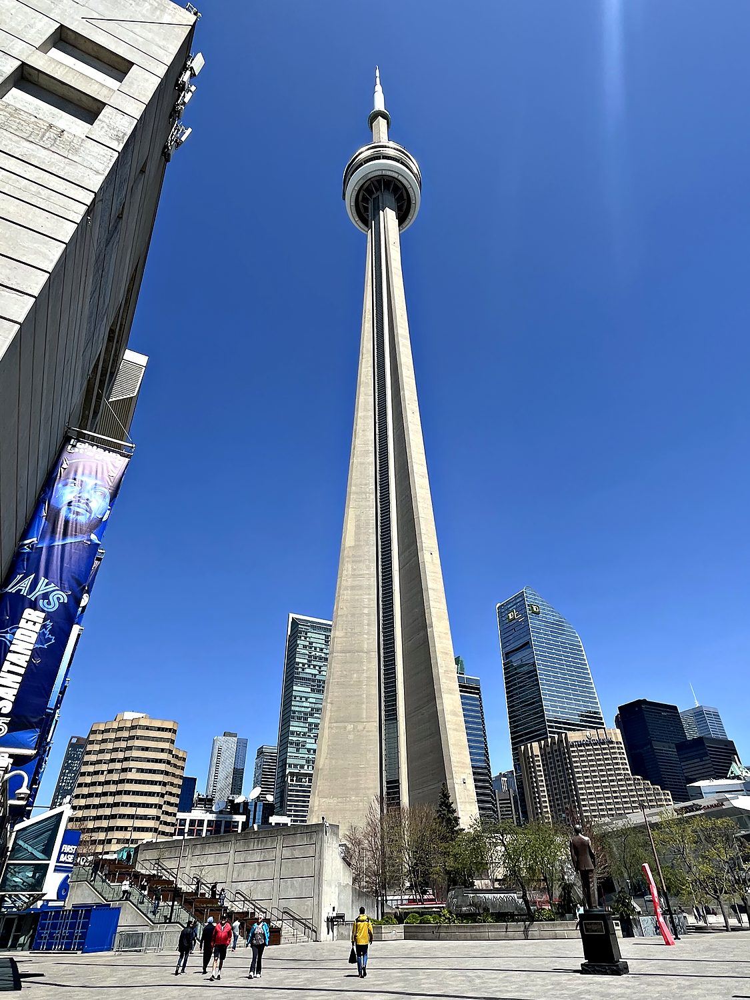
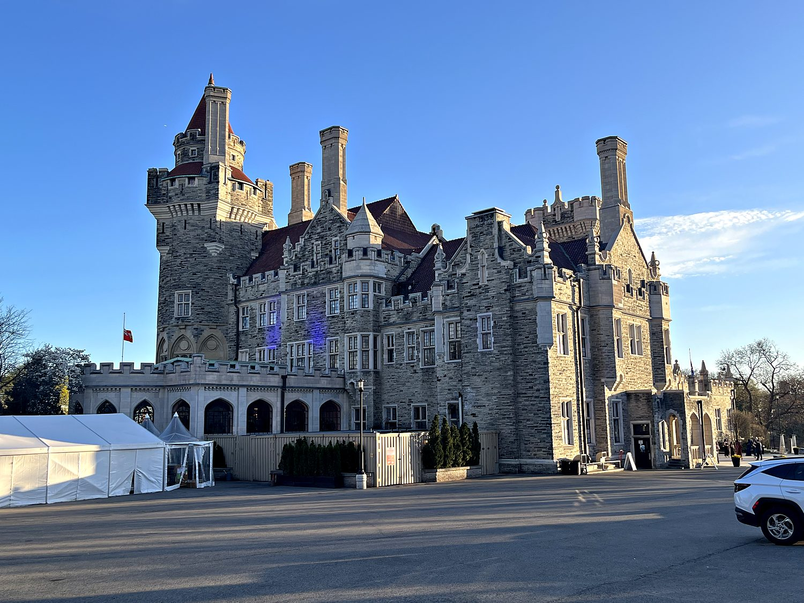

I visited Canada in April 2025, splitting a few days between the thundering spectacle of Niagara Falls and the gleaming skyline of Toronto, the country's largest city. Canada is the 2nd largest country in the world by area, an almost incomprehensibly vast expanse of forest, tundra, prairie, and lake stretching from the Atlantic to the Pacific to the Arctic. That being said, this particular trip kept me firmly in its densely populated southeastern corner. What struck me most was the low-key friendliness of the place: I noticed people were consistently, almost conspicuously, more considerate than back in the States, stepping aside on the sidewalk and generally radiating a mild politeness that lives up to the national stereotype. I arrived by bus into the middle of a raucous hockey playoff game, which felt like about the most quintessentially Canadian welcome imaginable.
Toronto is Canada's largest city and financial capital, a booming, forest-of-cranes metropolis on the shore of Lake Ontario, and one of the most multicultural cities on Earth. It is a place where a huge share of residents were born abroad, and it shows in the food, neighborhoods, and easy diversity of the streets. I crisscrossed it thoroughly: gazing up at the CN Tower, riding the ferry out to the Toronto Islands for that postcard skyline view, wandering the cobbled Distillery District and the lively Kensington Market, and losing a happy couple of hours among the dinosaurs at the Royal Ontario Museum. Before Toronto came Niagara Falls, about 90 minutes away on the U.S. border, where I crossed the Rainbow Bridge into Canada and spent a day marveling at one of the most famous waterfalls in the world. It is simultaneously a genuine natural wonder and a gloriously tacky carnival of neon.

The land that is now Canada was home to diverse Indigenous peoples (First Nations, Inuit, and later Métis) for thousands of years before European contact. French explorers arrived in the early 16th century and established the colony of New France, and for the next two centuries France and Britain vied for control of the fur trade and the continent, a rivalry Britain ultimately won with its victory in 1763. This dual heritage left a permanent mark: Canada remains an officially bilingual country, and the French-speaking province of Quebec preserves a distinct culture and periodically flirts with independence to this day.

Rather than breaking away through revolution as its southern neighbor did, Canada came together gradually and peacefully: the Confederation of 1867 united several British colonies into a self-governing dominion, and the country expanded westward across the continent, knitted together by a transcontinental railway. Full legal independence from Britain came step by step over the following century, though Canada retains the British monarch as its ceremonial head of state and remains a member of the Commonwealth.
Niagara Falls is one of the most famous waterfalls on the planet, and standing beside the great curving lip of the Horseshoe Falls which straddles the Canada-U.S. border, it is easy to see why. Some 2,800 cubic meters of water plunge over the edge every second, throwing up a permanent cloud of mist and a roar you feel in your chest. It is not the tallest or the most powerful waterfall in the world (I have stood before the truly overwhelming Iguazú in South America, which dwarfs it), but there is something uniquely wonderful about being able to walk right up to the brink of it, for free, and even venture behind the sheet of falling water on the Journey Behind the Falls. The Canadian side offers the best views, along with the neon carnival of Clifton Hill, which is an arcade-strip fever dream of a place that felt like a miniature Las Vegas.

For over three decades after its completion in 1976, the CN Tower was the tallest free-standing structure in the world, and at 553 meters it still dominates the Toronto skyline from virtually every angle. Built as a communications tower, it has become the city's defining symbol, a slender concrete needle visible from across Lake Ontario and instantly recognizable in any skyline photo of Toronto. Visitors can ride glass elevators to observation decks with a glass floor to stand on (for those with steadier nerves than the queasy), and the truly daring can strap in for the "EdgeWalk" around the outside of the pod, hundreds of meters up. I was quite content admiring it from the ground and from the water, where it anchors one of the most impressive urban skylines in North America.

Perched on a hill overlooking downtown Toronto is Casa Loma, a sprawling Gothic Revival mansion that is about as close as the New World gets to a genuine European castle. It was built between 1911 and 1914 for Sir Henry Pellatt, a flamboyant financier who made a fortune in hydroelectric power and poured it into constructing his own personal castle, complete with turrets, secret passages, an 800-foot tunnel, stables fit for royalty, and grand landscaped gardens. Pellatt's fortune collapsed not long after, and he lost the house within a decade. A cautionary tale about the perils of building yourself a castle, indeed, but his folly endures as one of Toronto's most beloved attractions. Having seen a fair few fortresses on my travels, I can report it may well be the coolest castle in North America, even if the competition on this particular continent is admittedly not fierce.
